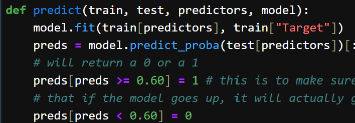

Project Three
Built an end-to-end time series ML baseline to predict next-day S&P 500 direction using historical OHLCV data pulled via yfinance. Defined a forward-looking label, engineered multi-horizon momentum features, then evaluated a Random Forest model using walk-forward backtesting
Stack: Python, pandas, scikit-learn, NumPy, matplotlib, yfinance